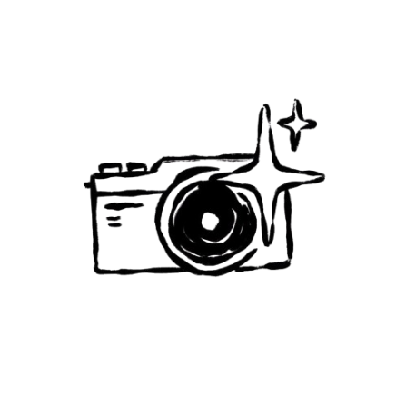
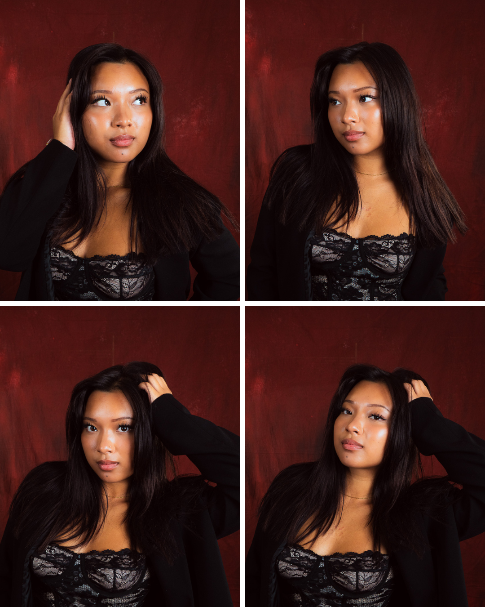
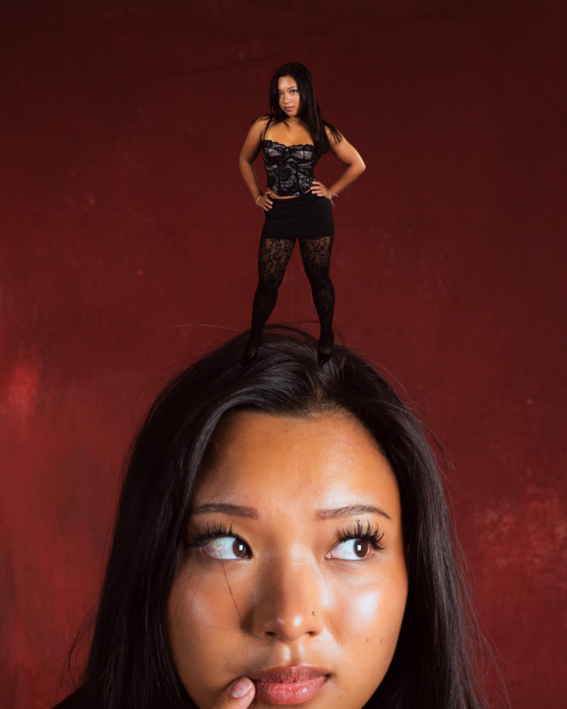
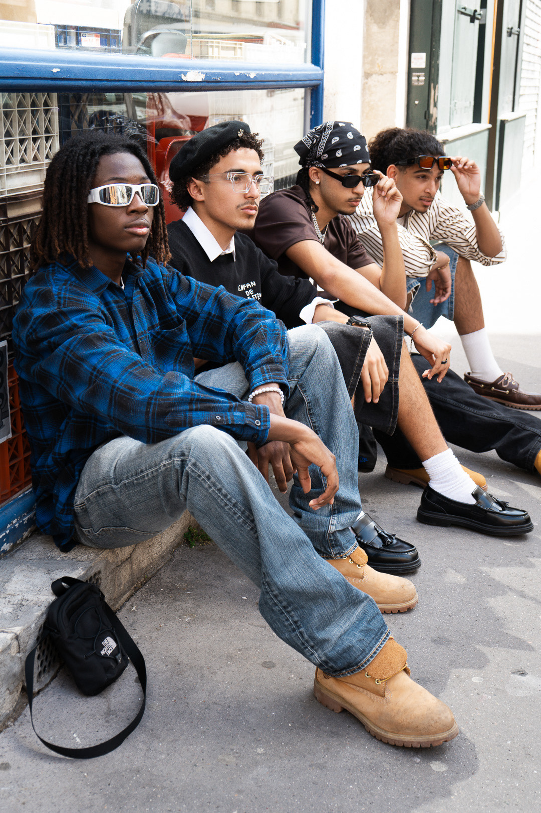
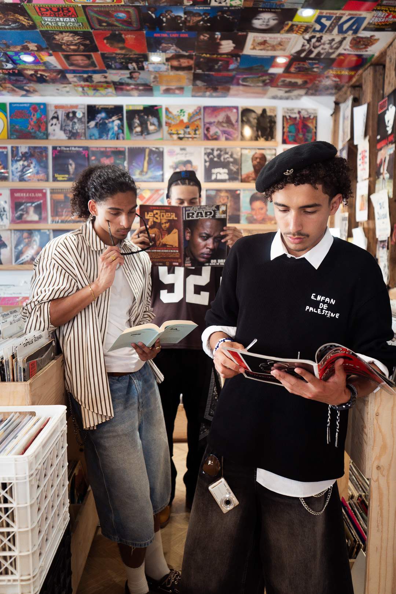

Ce projet regroupe une sélection de mes photographies et de mes travaux visuels personnels. J’aime capturer des moments, des textures, des atmosphères et des détails qui racontent une histoire, que ce soit en portrait, en paysage ou en photographie de rue.
J’ai utilisé un appareil photo, ainsi que des logiciels comme Photoshop et Lightroom pour retoucher, ajuster les couleurs et donner un rendu plus soigné à chaque image.




